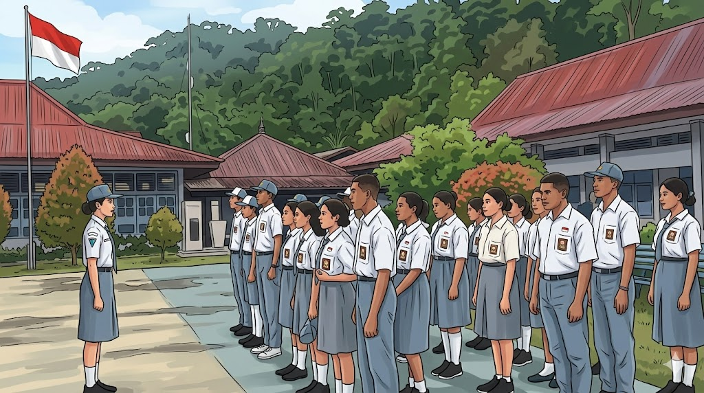
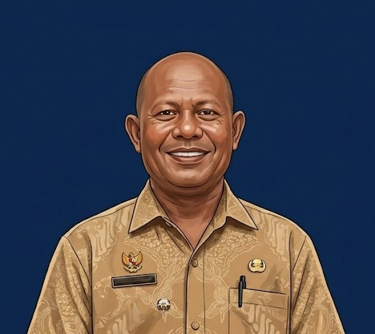
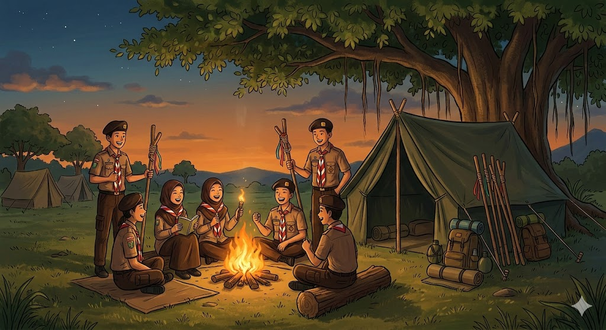
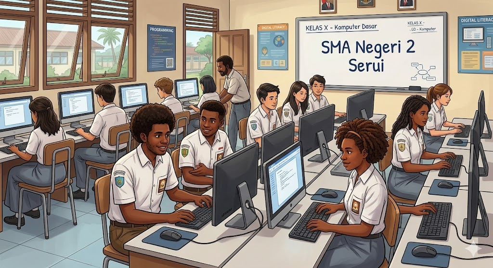
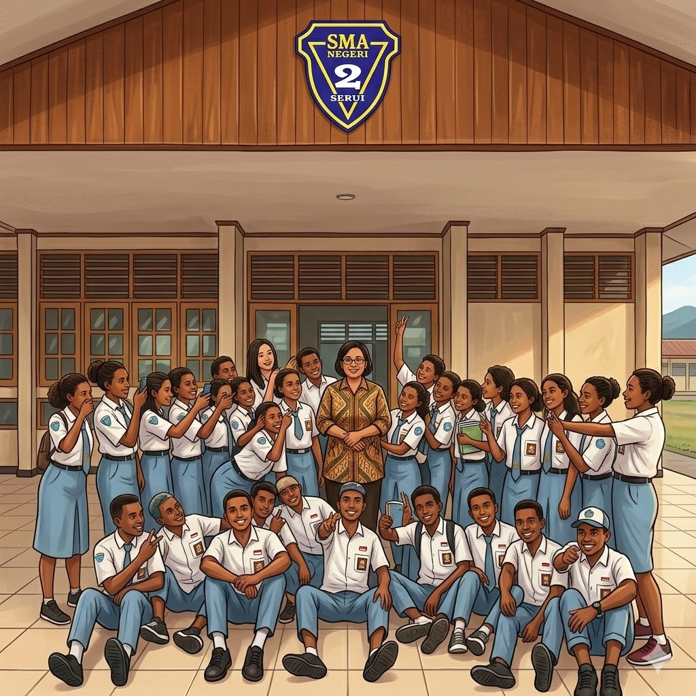

Unggul, Kreatif & Berkarakter.
Selamat Datang di Website Resmi SMA Negeri 2 Serui. Wadah informasi dan komunikasi digital bagi siswa, guru, dan orang tua.
Jelajahi Profil Sambutan Kepala SekolahSambutan Kepala Sekolah

Drs. Nama Kepala Sekolah
Kepala SMA Negeri 2 Serui
Puji syukur kepada Tuhan Yang Maha Esa atas segala rahmat dan karunia-Nya sehingga website resmi SMA Negeri 2 Serui dapat hadir sebagai sarana informasi dan komunikasi bagi seluruh civitas akademika.
Kami berkomitmen untuk terus meningkatkan kualitas pendidikan dan mengembangkan potensi setiap peserta didik agar menjadi generasi yang unggul, berkarakter, dan siap menghadapi tantangan masa depan.
Semoga website ini dapat memberikan manfaat bagi semua pihak dan menjadi jendela informasi bagi masyarakat luas tentang berbagai kegiatan dan prestasi SMA Negeri 2 Serui.
Statistik Sekolah
Data dan pencapaian SMA Negeri 2 Serui
850+
Siswa Aktif
45
Tenaga Pendidik
24
Ruang Kelas
50+
Prestasi
Lulusan Diterima di Perguruan Tinggi
Sejarah Singkat
SMA Negeri 2 Serui didirikan pada tahun XXXX sebagai bentuk komitmen pemerintah daerah Kabupaten Kepulauan Yapen dalam menyediakan pendidikan menengah atas yang berkualitas bagi masyarakat Serui dan sekitarnya.
Sejak berdiri, sekolah ini telah mengalami berbagai perkembangan baik dari segi infrastruktur, tenaga pendidik, maupun prestasi akademik dan non-akademik.
Hingga saat ini, SMA Negeri 2 Serui terus berkomitmen untuk menjadi lembaga pendidikan unggulan yang mampu mencetak generasi beriman, cerdas, terampil, dan berwawasan lingkungan di Tanah Papua.
Visi & Misi
Visi
"Terwujudnya generasi yang beriman, cerdas, terampil, dan berwawasan lingkungan."
Misi Sekolah
- Meningkatkan kualitas pembelajaran berbasis teknologi informasi.
- Mengembangkan potensi minat dan bakat siswa melalui ekstrakurikuler.
- Menanamkan nilai-nilai religius dan budaya lokal Papua.
- Menciptakan lingkungan sekolah yang bersih, sehat, dan kondusif.
- Membangun kerja sama dengan masyarakat dan dunia usaha.
Tujuan
Menghasilkan lulusan yang beriman dan bertaqwa kepada Tuhan Yang Maha Esa serta berakhlak mulia.
Meningkatkan prestasi akademik dan non-akademik peserta didik di tingkat kabupaten, provinsi, dan nasional.
Mempersiapkan peserta didik untuk melanjutkan pendidikan ke jenjang perguruan tinggi yang berkualitas.
Mewujudkan lingkungan sekolah yang bersih, hijau, dan nyaman sebagai tempat belajar yang kondusif.
Moto
"Cerdas, Berkarakter, dan Berprestasi"
Moto ini menjadi semangat dan landasan bagi seluruh civitas akademika SMA Negeri 2 Serui dalam menjalankan tugas pendidikan sehari-hari.
Arti Lambang
-
Bentuk Perisai
Melambangkan perlindungan dan ketahanan dalam dunia pendidikan.
-
Warna Biru
Melambangkan kedalaman ilmu pengetahuan dan laut Papua yang luas.
-
Warna Emas
Melambangkan kemuliaan, kejayaan, dan semangat meraih prestasi.
-
Buku Terbuka
Melambangkan ilmu pengetahuan dan keterbukaan dalam belajar.
-
Pena
Melambangkan kecerdasan, kreativitas, dan semangat menulis masa depan.
Struktur Organisasi
Kepala Sekolah
Drs. Nama Kepala Sekolah
Waka Kurikulum
Nama Waka Kurikulum
Waka Kesiswaan
Nama Waka Kesiswaan
Waka Sarpras
Nama Waka Sarpras
Waka Humas
Nama Waka Humas
Dewan Guru
Tata Usaha
Komite Sekolah
Akademik
Program pendidikan dan kegiatan belajar mengajar di SMA Negeri 2 Serui
Kurikulum
SMA Negeri 2 Serui menerapkan Kurikulum Merdeka yang memberikan fleksibilitas kepada guru dan siswa dalam proses pembelajaran. Kurikulum ini menekankan pada pengembangan kompetensi dan karakter peserta didik.
- Kurikulum Merdeka
- Projek Penguatan Profil Pelajar Pancasila (P5)
- Pembelajaran Berbasis Teknologi
IPA
Matematika, Fisika, Kimia, Biologi
IPS
Ekonomi, Sosiologi, Geografi, Sejarah
Bahasa
B. Indonesia, B. Inggris, Sastra
TIK
Informatika & Teknologi
Ekstrakurikuler
Pramuka
Olahraga
Seni & Budaya
Karya Ilmiah
Rohani Kristen
Paskibra
Paduan Suara
PMR
Fasilitas Sekolah
Galeri Kegiatan
Dokumentasi kegiatan dan momen berharga di SMA Negeri 2 Serui.
Upacara Bendera

Kegiatan Pramuka
Lomba Olahraga

Praktikum Laboratorium

Siswa & Wali Kelas
Pentas Seni Budaya